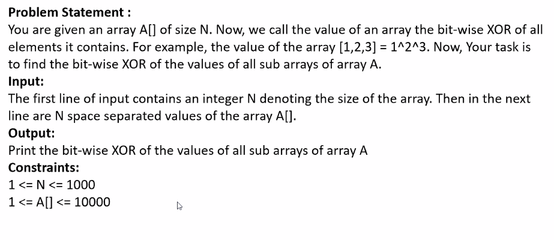
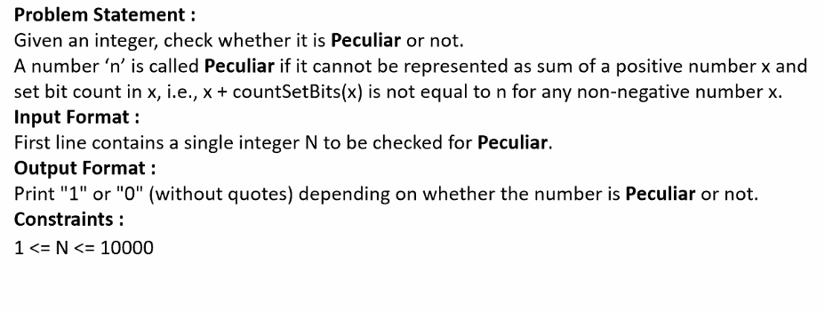
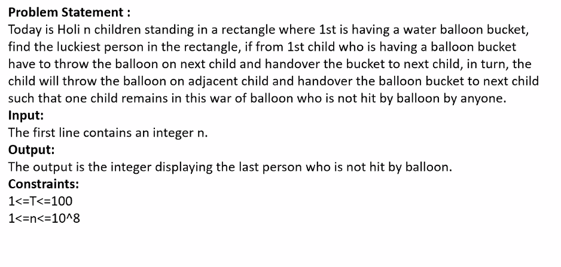
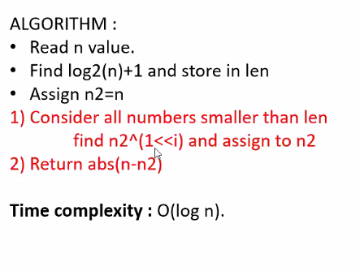
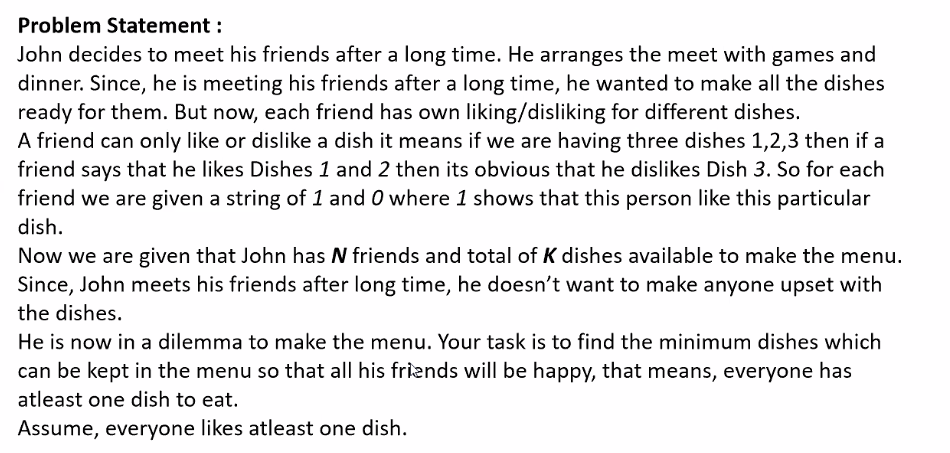
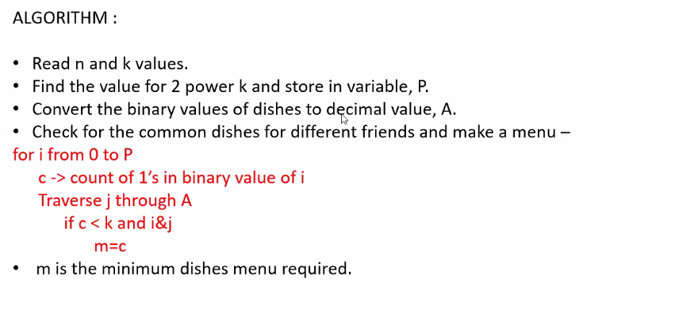

print a nxn magic matrix input is only one integer n:
1)sum across any row, column or diagonal should be same, its called magic matrix.
sum across diagonal or column or row is equal to (n(n^2 +1) )/2
Pseudo code :

---------------------------------------------------------------------------------------
2)


for a given array:
if number of elements are even, then directly the result will be 0
if number of elements are odd, calculate xor for only even indexed values.

and if there is only 1 element then xor will be the element itself;
now to get sub arrays of an array
-------------------------------------------------------------------------------------------------------------------------------------------------------------------------
3)

peculiar number is a number which cant be expressed in the form of ( number+ number of 1's in that numbers ) binary representation
-------------------------------------------------------------------------------------------------------------------------------------------------------------------------
4)


-------------------------------------------------------------------------------------------------------------------------------------------------------------------------
5)


-------------------------------------------------------------------------------------------------------------------------------------------------------------------------
6)

